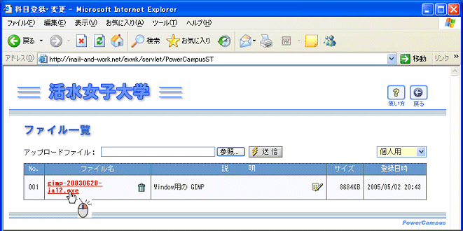
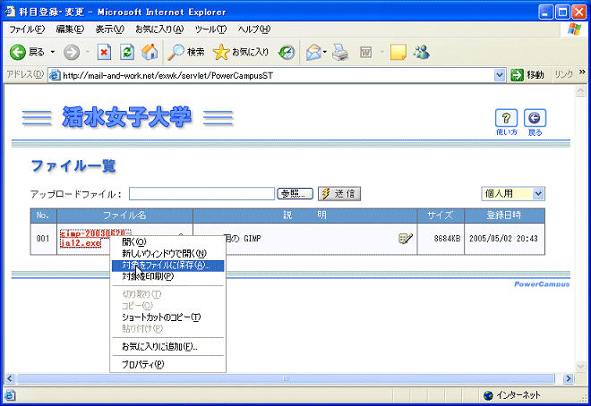
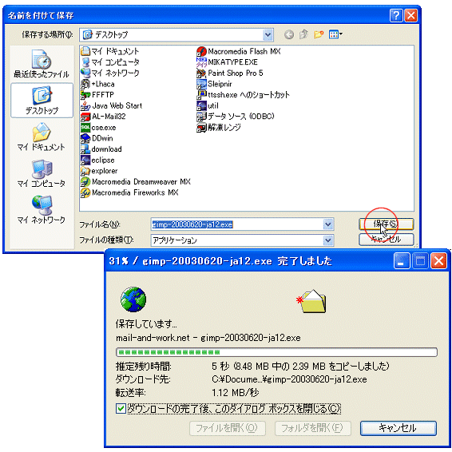
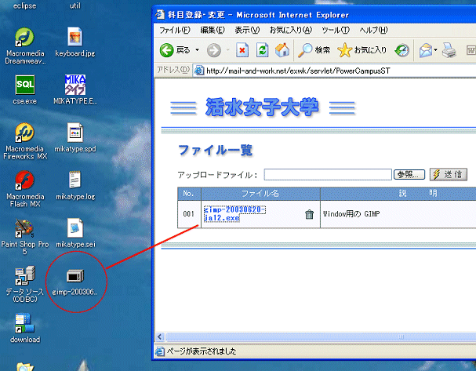
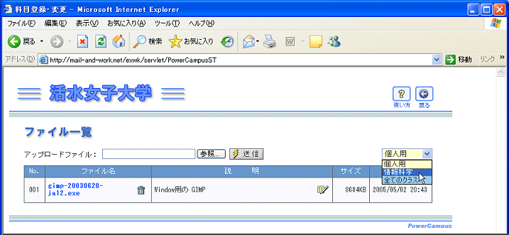
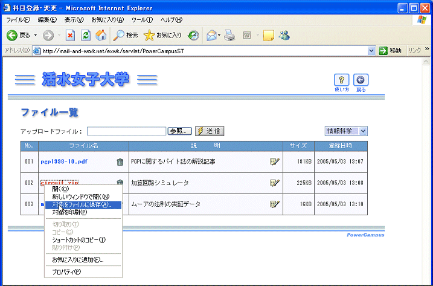

ファイルキャビネットの使い方
ファイルキャビネットにファイルを保管する
ファイルキャビネットからファイルを取り出す
クラス用キャビネットをアクセスする
ファイルキャビネットは
ファイルの保管庫
です．個人的なファイルを保管する
個人用キャビネット
と，授業で利用する
授業用キャビネット
からなります．ファイルキャビネットに保管したファイルは，ウェブブラウザさえあれば，大学でも，自宅でも，出し入れ可能です．なお，個人用キャビネットには読み書き可能ですが，講義で利用されるクラス用キャビネットは読み出し専用になっています．
---------------------------------
ファイルキャビネットからファイルを取り出す
ファイル名をマウスの右ボタンでクリックする
ファイルのダウンロードでは，右ボタンでクリックしてポップアップメニューを表示させ，「対象をファイルに保存」を選ぶ方法を取って下さい．直接クリックすると，ブラウザにそのファイルの内容が表示されてしまう場合があります．
Word,Excel,PowerPointなどはプログラムがパソコンにインストールされていますので，それらで作成したデータファイルをクリックすると，ブラウザの中にそれらの文書が開かれてしまいます．これはセキュリティの面からも問題がありますので，本当に開いてみたい場合以外は，ここに述べたように右ボタンでクリックするようにしてください．

ポップアップメニューで「対照をファイルに保存」をクリックする

ファイルダイアログでファイルを保存する場所を指定して保存をクリックする

ファイルが保存されたことを確認する

クラス用キャビネットをアクセスする
クラス用キャビネットは
ダウンロード専用
です．アップロードはできません．授業で必要になる各種のファイルを受け取る目的で利用します．個人用キャビネットからの切り替えは，右端のリストボックスから，目的のクラス名を選択するだけです．
リストボックスからクラスを選択する
リストボックスには，受講しているクラスの名前が全て含まれています．全てのクラスを選択すると，各クラスを統合した全てのファイルリストが表示されます．

ファイルをダウンロードする
右ボタンでクリックしてダウンロードしてください．



 ファイル名をマウスの右ボタンでクリックする
ファイル名をマウスの右ボタンでクリックする
 ポップアップメニューで「対照をファイルに保存」をクリックする
ポップアップメニューで「対照をファイルに保存」をクリックする
 ファイルダイアログでファイルを保存する場所を指定して保存をクリックする
ファイルダイアログでファイルを保存する場所を指定して保存をクリックする
 ファイルが保存されたことを確認する
ファイルが保存されたことを確認する